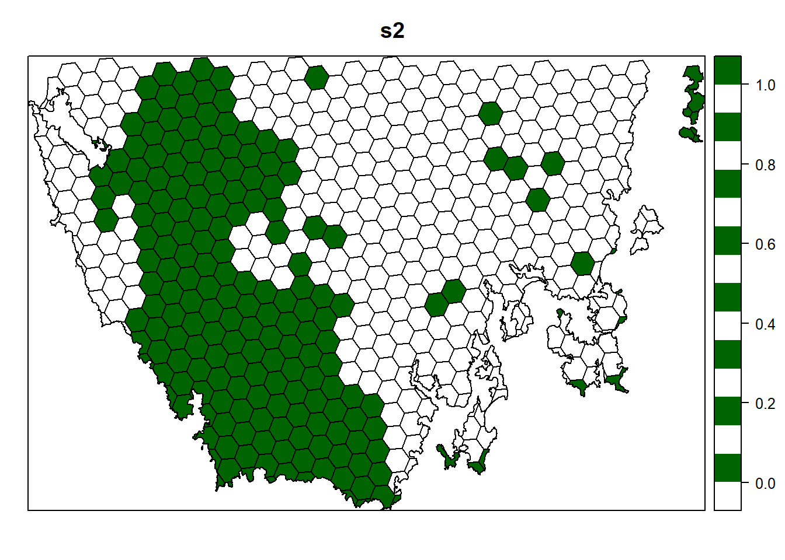
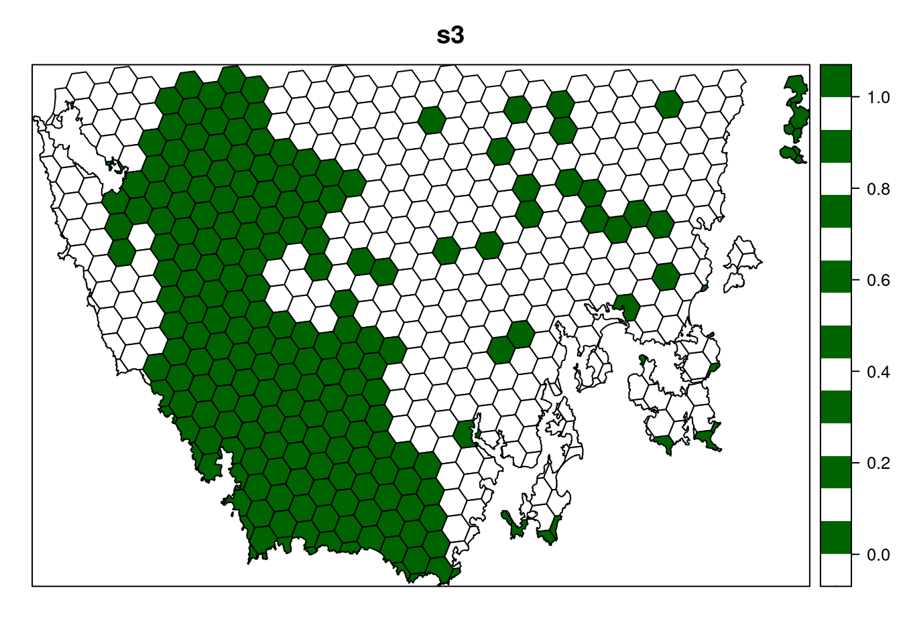
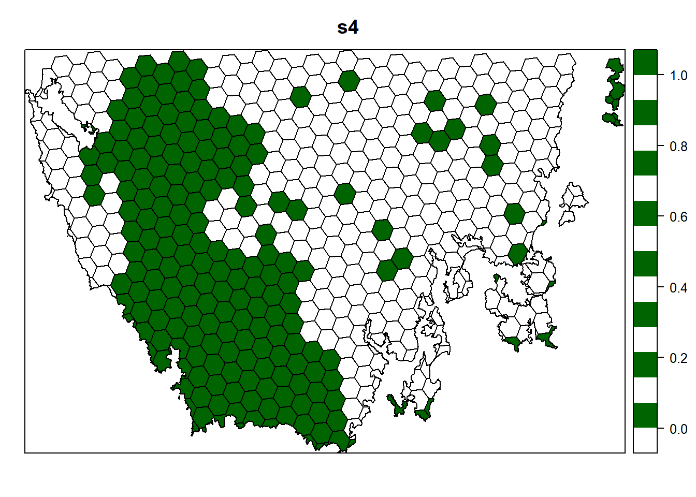
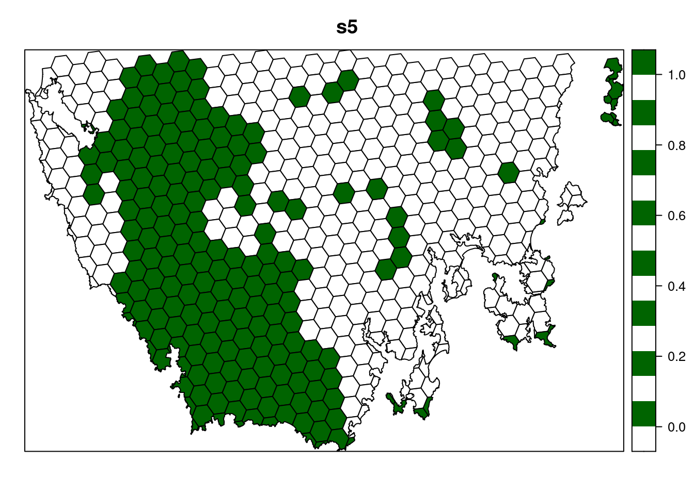
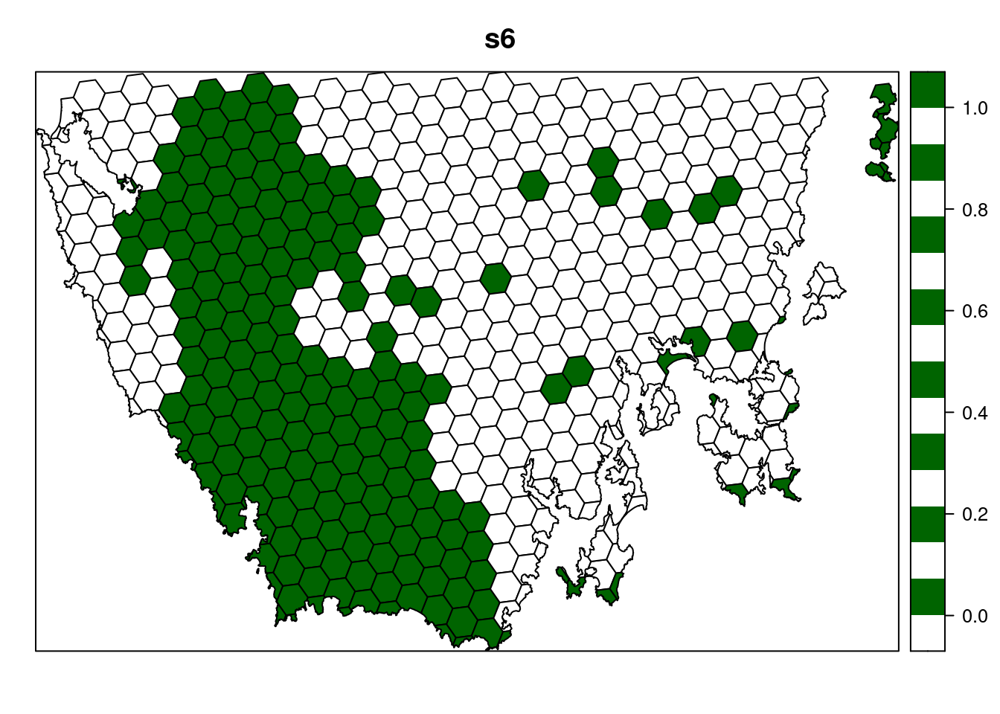
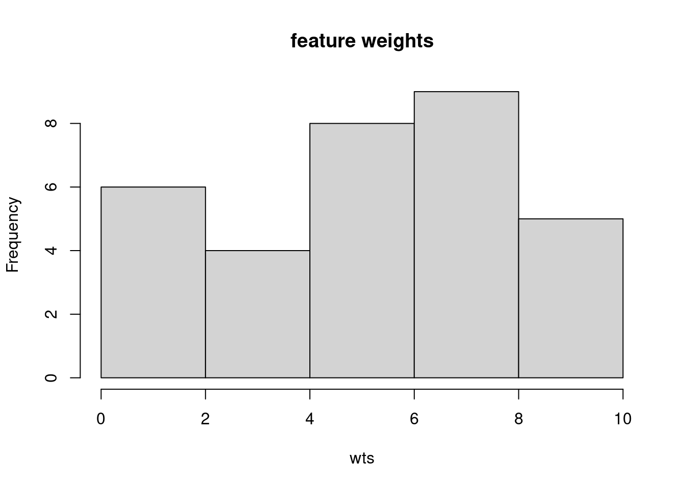
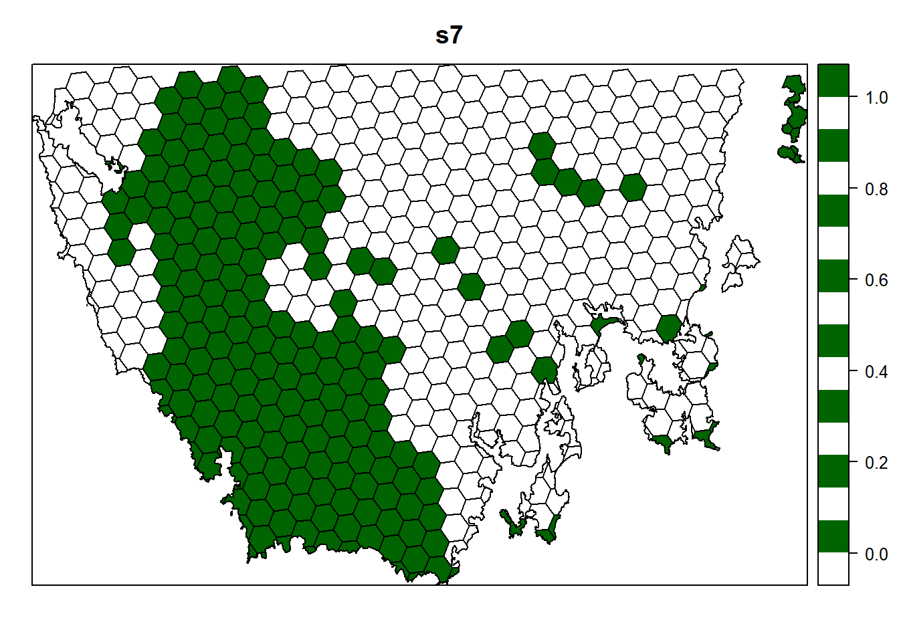
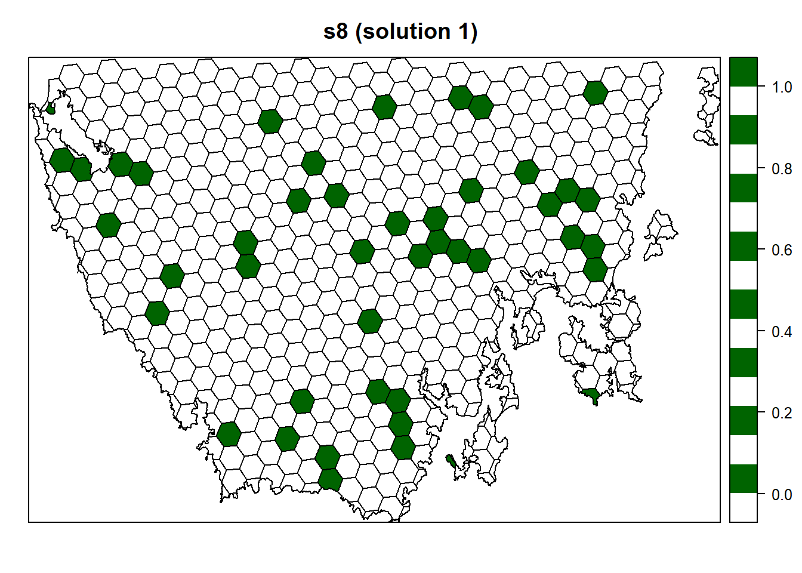
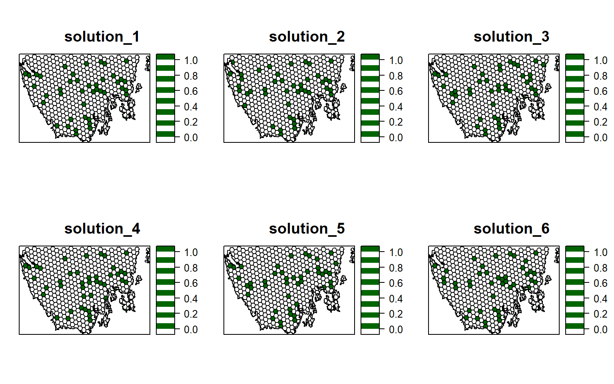

Chapter 5 Spatial prioritizations
5.1 Introduction
Here we will develop prioritizations to identify priority areas for protected area establishment. Its worth noting that prioritizr, Marxan, and Zonation are all decision support tools. This means that they are designed to help you make decisions—they can’t make decisions for you.
5.2 Starting out simple
To start things off, let’s keep things simple. Let’s create a prioritization using the minimum set formulation of the reserve selection problem. This formulation means that we want a solution that will meet the targets for our biodiversity features for minimum cost. Here, we will set 5% targets for each vegetation class and use the data in the cost column to specify acquisition costs. Unlike Marxan, we do not have to calibrate species penalty factors (SPFs) to ensure that our target are met—prioritizr should always return solutions to minimum set problems where all the targets are met. Although we strongly recommend using Gurobi to solve problems (with add_gurobi_solver), we will use the lpsymphony solver in this workshop since it is easier to install. The Gurobi solver is much faster than the lpsymphony solver (see here for installation instructions).
## class : SpatialPolygonsDataFrame
## features : 516
## extent : 348703.2, 611932.4, 5167775, 5344516 (xmin, xmax, ymin, ymax)
## crs : +proj=utm +zone=55 +south +datum=WGS84 +units=m +no_defs
## variables : 6
## names : id, cost, status, locked_in, locked_out, pa_status
## min values : 557, 3.59717531470679, 0, 0, 0, 0
## max values : 1130, 47.238336402701, 2, 1, 1, 1# make prioritization problem
p1 <- problem(pu_data, veg_data, cost_column = "cost") %>%
add_min_set_objective() %>%
add_relative_targets(0.05) %>% # 5% representation targets
add_binary_decisions() %>%
add_lpsymphony_solver(verbose = FALSE)## Warning: Support for sp package will be deprecated.
## ℹ Use `sf::st_as_sf()` to convert data for future compatibility.## Warning: Support for raster package will be deprecated.
## ℹ Use `terra::rast()` to convert data for future compatibility.## A conservation problem (<ConservationProblem>)## ├•data## │├•features: "vegetation_1", "vegetation_2", "vegetation_3", "vegetation_4" , … (32 total)## │└•planning units:## │ ├•data: <SpatialPolygonsDataFrame> (516 total)## │ ├•costs: continuous values (between 3.5972 and 47.2383)## │ ├•extent: 348703.1831, 5167774.5993, 611932.4474, 5344516.4109 (xmin, ymin, xmax, ymax)## │ └•CRS: WGS 84 / UTM zone 55S## ├•formulation## │├•objective: minimum set objective## │├•penalties: none specified## │├•targets: relative targets (between 0.05 and 0.05)## │├•constraints: none specified## │└•decisions: binary decision## └•optimization## ├•portfolio: shuffle portfolio (`number_solutions` = 1, …)## └•solver: lpsymphony (`gap` = 0.1, `time_limit` = 2147483647, `first_feasible` = FALSE, …)## # ℹ Use `summary(...)` to see complete formulation.# solve problem
s1 <- solve(p1)
# print solution, the solution_1 column contains the solution values
# indicating if a planning unit is (1) selected or (0) not
print(s1)## class : SpatialPolygonsDataFrame
## features : 516
## extent : 348703.2, 611932.4, 5167775, 5344516 (xmin, xmax, ymin, ymax)
## crs : +proj=utm +zone=55 +south +datum=WGS84 +units=m +no_defs
## variables : 7
## names : id, cost, status, locked_in, locked_out, pa_status, solution_1
## min values : 557, 3.59717531470679, 0, 0, 0, 0, 0
## max values : 1130, 47.238336402701, 2, 1, 1, 1, 1## [1] 15## [1] 386.4116
Now let’s examine the solution.
- How many planing units were selected in the prioritization? What proportion of planning units were selected in the prioritization?
- Is there a pattern in the spatial distribution of the priority areas?
- Can you verify that all of the targets were met in the prioritization (hint:
feature_representation(p1, s1[, "solution_1"]))?
5.3 Adding complexity
Our first prioritization suffers many limitations, so let’s add additional constraints to the problem to make it more useful. First, let’s lock in planing units that are already by covered protected areas. If some vegetation communities are already secured inside existing protected areas, then we might not need to add as many new protected areas to the existing protected area system to meet their targets. Since our planning unit data (pu_da) already contains this information in the locked_in column, we can use this column name to specify which planning units should be locked in.
# make prioritization problem
p2 <- problem(pu_data, veg_data, cost_column = "cost") %>%
add_min_set_objective() %>%
add_relative_targets(0.05) %>%
add_locked_in_constraints("locked_in") %>%
add_binary_decisions() %>%
add_lpsymphony_solver(verbose = FALSE)## Warning: Support for sp package will be deprecated.
## ℹ Use `sf::st_as_sf()` to convert data for future compatibility.## Warning: Support for raster package will be deprecated.
## ℹ Use `terra::rast()` to convert data for future compatibility.## A conservation problem (<ConservationProblem>)## ├•data## │├•features: "vegetation_1", "vegetation_2", "vegetation_3", "vegetation_4" , … (32 total)## │└•planning units:## │ ├•data: <SpatialPolygonsDataFrame> (516 total)## │ ├•costs: continuous values (between 3.5972 and 47.2383)## │ ├•extent: 348703.1831, 5167774.5993, 611932.4474, 5344516.4109 (xmin, ymin, xmax, ymax)## │ └•CRS: WGS 84 / UTM zone 55S## ├•formulation## │├•objective: minimum set objective## │├•penalties: none specified## │├•targets: relative targets (between 0.05 and 0.05)## │├•constraints:## ││└•1: locked in constraints (198 planning units)## │└•decisions: binary decision## └•optimization## ├•portfolio: shuffle portfolio (`number_solutions` = 1, …)## └•solver: lpsymphony (`gap` = 0.1, `time_limit` = 2147483647, `first_feasible` = FALSE, …)## # ℹ Use `summary(...)` to see complete formulation.# solve problem
s2 <- solve(p2)
# plot solution
spplot(s2, "solution_1", col.regions = c("white", "darkgreen"), main = "s2")
Let’s pretend that we talked to an expert on the vegetation communities in our study system and they recommended that a 20% target was needed for each vegetation class. So, armed with this information, let’s set the targets to 20%.
# make prioritization problem
p3 <- problem(pu_data, veg_data, cost_column = "cost") %>%
add_min_set_objective() %>%
add_relative_targets(0.2) %>%
add_locked_in_constraints("locked_in") %>%
add_binary_decisions() %>%
add_lpsymphony_solver(verbose = FALSE)## Warning: Support for sp package will be deprecated.
## ℹ Use `sf::st_as_sf()` to convert data for future compatibility.## Warning: Support for raster package will be deprecated.
## ℹ Use `terra::rast()` to convert data for future compatibility.## A conservation problem (<ConservationProblem>)## ├•data## │├•features: "vegetation_1", "vegetation_2", "vegetation_3", "vegetation_4" , … (32 total)## │└•planning units:## │ ├•data: <SpatialPolygonsDataFrame> (516 total)## │ ├•costs: continuous values (between 3.5972 and 47.2383)## │ ├•extent: 348703.1831, 5167774.5993, 611932.4474, 5344516.4109 (xmin, ymin, xmax, ymax)## │ └•CRS: WGS 84 / UTM zone 55S## ├•formulation## │├•objective: minimum set objective## │├•penalties: none specified## │├•targets: relative targets (between 0.2 and 0.2)## │├•constraints:## ││└•1: locked in constraints (198 planning units)## │└•decisions: binary decision## └•optimization## ├•portfolio: shuffle portfolio (`number_solutions` = 1, …)## └•solver: lpsymphony (`gap` = 0.1, `time_limit` = 2147483647, `first_feasible` = FALSE, …)## # ℹ Use `summary(...)` to see complete formulation.# solve problem
s3 <- solve(p3)
# plot solution
spplot(s3, "solution_1", col.regions = c("white", "darkgreen"), main = "s3")
Next, let’s lock out highly degraded areas. Similar to before, this data is present in our planning unit data so we can use the locked_out column name to achieve this.
# make prioritization problem
p4 <- problem(pu_data, veg_data, cost_column = "cost") %>%
add_min_set_objective() %>%
add_relative_targets(0.1) %>%
add_locked_in_constraints("locked_in") %>%
add_locked_out_constraints("locked_out") %>%
add_binary_decisions() %>%
add_lpsymphony_solver(verbose = FALSE)## Warning: Support for sp package will be deprecated.
## ℹ Use `sf::st_as_sf()` to convert data for future compatibility.## Warning: Support for raster package will be deprecated.
## ℹ Use `terra::rast()` to convert data for future compatibility.## A conservation problem (<ConservationProblem>)## ├•data## │├•features: "vegetation_1", "vegetation_2", "vegetation_3", "vegetation_4" , … (32 total)## │└•planning units:## │ ├•data: <SpatialPolygonsDataFrame> (516 total)## │ ├•costs: continuous values (between 3.5972 and 47.2383)## │ ├•extent: 348703.1831, 5167774.5993, 611932.4474, 5344516.4109 (xmin, ymin, xmax, ymax)## │ └•CRS: WGS 84 / UTM zone 55S## ├•formulation## │├•objective: minimum set objective## │├•penalties: none specified## │├•targets: relative targets (between 0.1 and 0.1)## │├•constraints:## ││├•1: locked in constraints (198 planning units)## ││└•2: locked out constraints (6 planning units)## │└•decisions: binary decision## └•optimization## ├•portfolio: shuffle portfolio (`number_solutions` = 1, …)## └•solver: lpsymphony (`gap` = 0.1, `time_limit` = 2147483647, `first_feasible` = FALSE, …)## # ℹ Use `summary(...)` to see complete formulation.# solve problem
s4 <- solve(p4)
# plot solution
spplot(s4, "solution_1", col.regions = c("white", "darkgreen"), main = "s4")
Now, let’s compare the solutions.
- What is the cost of the planning units selected in
s2,s3, ands4? - How many planning units are in
s2,s3, ands4? - Do the solutions with more planning units have a greater cost? Why or why not?
- Why does the first solution (
s1) cost less than the second solution with protected areas locked into the solution (s2)? - Why does the third solution (
s3) cost less than the fourth solution solution with highly degraded areas locked out (s4)? - Since planning units covered by existing protected areas have already been purchased, what is the cost for expanding the protected area system based on on the fourth prioritization (
s4) (hint: total cost minus the cost of locked in planning units)? - What happens if you specify targets that exceed the total amount of vegetation in the study area and try to solve the problem? You can do this by modifying the code to make
p4withadd_absolute_targets(1000)instead ofadd_relative_targets(0.2)and generating a new solution.
5.4 Penalizing fragmentation
Plans for protected area systems should facilitate gene flow and dispersal between individual reserves in the system. However, the prioritizations we have made so far have been highly fragmented. Similar to the Marxan decision support tool, we can add penalties to our conservation planning problem to penalize fragmentation (i.e. total exposed boundary length) and we also need to set a useful penalty value when adding such penalties (akin to Marxan’s boundary length multiplier value; BLM). If we set our penalty value too low, then we will end up with a solution that is identical to the solution with no added penalties. If we set our penalty value too high, then prioritizr will take a long time to solve the problem and we will end up with a solution that contains lots of extra planning units that are not needed (since the penalty value is so high that minimizing fragmentation is more important than cost). As a rule of thumb, we generally want penalty values between 0.00001 and 0.01 but finding a useful penalty value requires calibration. The “correct” penalty value depends on the size of the planning units, the main objective values (e.g. cost values), and the effect of fragmentation on biodiversity persistence. Let’s create a new problem that is similar to our previous problem (p4)—except that it contains boundary length penalties and a slightly higher optimality gap to reduce runtime (default is 0.1)—and solve it. Since our planning unit data is in a spatial format (i.e. vector or raster data), prioritizr can automatically calculate the boundary data for us.
# make prioritization problem
p5 <- problem(pu_data, veg_data, cost_column = "cost") %>%
add_min_set_objective() %>%
add_boundary_penalties(penalty = 0.0005) %>%
add_relative_targets(0.1) %>%
add_locked_in_constraints("locked_in") %>%
add_locked_out_constraints("locked_out") %>%
add_binary_decisions() %>%
add_lpsymphony_solver(verbose = FALSE, gap = 1)## Warning: Support for sp package will be deprecated.
## ℹ Use `sf::st_as_sf()` to convert data for future compatibility.## Warning: Support for raster package will be deprecated.
## ℹ Use `terra::rast()` to convert data for future compatibility.## A conservation problem (<ConservationProblem>)## ├•data## │├•features: "vegetation_1", "vegetation_2", "vegetation_3", "vegetation_4" , … (32 total)## │└•planning units:## │ ├•data: <SpatialPolygonsDataFrame> (516 total)## │ ├•costs: continuous values (between 3.5972 and 47.2383)## │ ├•extent: 348703.1831, 5167774.5993, 611932.4474, 5344516.4109 (xmin, ymin, xmax, ymax)## │ └•CRS: WGS 84 / UTM zone 55S## ├•formulation## │├•objective: minimum set objective## │├•penalties:## ││└•1: boundary penalties (`penalty` = 5e-04, `edge_factor` = 0.5, …)## │├•targets: relative targets (between 0.1 and 0.1)## │├•constraints:## ││├•1: locked in constraints (198 planning units)## ││└•2: locked out constraints (6 planning units)## │└•decisions: binary decision## └•optimization## ├•portfolio: shuffle portfolio (`number_solutions` = 1, …)## └•solver: lpsymphony (`gap` = 1, `time_limit` = 2147483647, `first_feasible` = FALSE, …)## # ℹ Use `summary(...)` to see complete formulation.## Warning: Support for sp package will be deprecated.
## ℹ Use `sf::st_as_sf()` to convert data for future compatibility.## class : SpatialPolygonsDataFrame
## features : 516
## extent : 348703.2, 611932.4, 5167775, 5344516 (xmin, xmax, ymin, ymax)
## crs : +proj=utm +zone=55 +south +datum=WGS84 +units=m +no_defs
## variables : 7
## names : id, cost, status, locked_in, locked_out, pa_status, solution_1
## min values : 557, 3.59717531470679, 0, 0, 0, 0, 0
## max values : 1130, 47.238336402701, 2, 1, 1, 1, 1
Now let’s compare the solutions to the problems with (s5) and without (s4) the boundary length penalties.
- What is the cost the fourth (
s4) and fifth (s5) solutions? Why does the fifth solution (s5) cost more than the fourth (s4) solution? - Try setting the penalty value to 0.000000001 (i.e.
1e-9) instead of 0.0005. What is the cost of the solution now? Is it different from the fourth solution (s4) (hint: try plotting the solutions to visualize them)? Is this is a useful penalty value? Why? - Try setting the penalty value to 0.5. What is the cost of the solution now? Is it different from the fourth solution (
s4) (hint: try plotting the solutions to visualize them)? Is this a useful penalty value? Why?
5.5 Budget limited prioritizations
In the real-world, the funding available for conservation is often very limited. As a consequence, decision makers often need prioritizations where the total cost of priority areas does not exceed a budget. In our fourth prioritization (s4), we found that we would need to spend an additional $226 million AUD to ensure that each vegetation community is adequately represented in the protected area system. But what if the funds available for establishing new protected areas were limited to $100 million AUD? In this case, we need a “budget limited prioritization”. Budget limited prioritizations aim to maximize some measure of conservation benefit subject to a budget (e.g. number of species with at least one occurrence in the protected area system, or phylogenetic diversity). Let’s create a prioritization by maximizing the number of adequately represented features whilst keeping within a pre-specified budget.
# funds for additional land acquisition (same units as cost data)
funds <- 100
# calculate the total budget for the prioritization
budget <- funds + sum(s4$cost * s4$locked_in)
print(budget)## [1] 6580.64# make prioritization problem
p6 <- problem(pu_data, veg_data, cost_column = "cost") %>%
add_max_features_objective(budget) %>%
add_relative_targets(0.1) %>%
add_locked_in_constraints("locked_in") %>%
add_locked_out_constraints("locked_out") %>%
add_binary_decisions() %>%
add_lpsymphony_solver(verbose = FALSE)## Warning: Support for sp package will be deprecated.
## ℹ Use `sf::st_as_sf()` to convert data for future compatibility.## Warning: Support for raster package will be deprecated.
## ℹ Use `terra::rast()` to convert data for future compatibility.## A conservation problem (<ConservationProblem>)## ├•data## │├•features: "vegetation_1", "vegetation_2", "vegetation_3", "vegetation_4" , … (32 total)## │└•planning units:## │ ├•data: <SpatialPolygonsDataFrame> (516 total)## │ ├•costs: continuous values (between 3.5972 and 47.2383)## │ ├•extent: 348703.1831, 5167774.5993, 611932.4474, 5344516.4109 (xmin, ymin, xmax, ymax)## │ └•CRS: WGS 84 / UTM zone 55S## ├•formulation## │├•objective: maximum representation objective (`budget` = 6580.6397)## │├•penalties: none specified## │├•targets: relative targets (between 0.1 and 0.1)## │├•constraints:## ││├•1: locked in constraints (198 planning units)## ││└•2: locked out constraints (6 planning units)## │└•decisions: binary decision## └•optimization## ├•portfolio: shuffle portfolio (`number_solutions` = 1, …)## └•solver: lpsymphony (`gap` = 0.1, `time_limit` = 2147483647, `first_feasible` = FALSE, …)## # ℹ Use `summary(...)` to see complete formulation.# solve problem
s6 <- solve(p6)
# plot solution
spplot(s6, "solution_1", col.regions = c("white", "darkgreen"), main = "s6")
# calculate feature representation
r6 <- eval_feature_representation_summary(p6, s6[, "solution_1"])## Warning: Support for sp package will be deprecated.
## ℹ Use `sf::st_as_sf()` to convert data for future compatibility.## [1] 16# find out which features have their targets met when we add weights,
# note that NA is for vegetation.61
print(r6$feature[r6$relative_held >= 0.2])## [1] "vegetation_4" "vegetation_5" "vegetation_14" "vegetation_17"
## [5] "vegetation_18" "vegetation_19" "vegetation_20" "vegetation_21"
## [9] "vegetation_22" "vegetation_23" "vegetation_24" "vegetation_25"
## [13] "vegetation_26" "vegetation_27" "vegetation_28" "vegetation_29"We can also add weights to specify that it is more important to meet the targets for certain features and less important for other features. A common approach for weighting features is to assign a greater importance to features with smaller spatial distributions. The rationale behind this weighting method is that features with smaller spatial distributions are at greater risk of extinction. So, let’s calculate some weights for our vegetation communities and see how weighting the features changes our prioritization.
# calculate weights as the log inverse number of grid cells that each vegetation
# class occupies, rescaled between 1 and 100
wts <- 1 / cellStats(veg_data, "sum")
wts <- rescale(wts, to = c(1, 10))
# print the name of the feature with smallest weight
names(veg_data)[which.min(wts)]## [1] "vegetation_12"## [1] "vegetation_3"
# make prioritization problem with weights
p7 <- problem(pu_data, veg_data, cost_column = "cost") %>%
add_max_features_objective(budget) %>%
add_relative_targets(0.1) %>%
add_feature_weights(wts) %>%
add_locked_in_constraints("locked_in") %>%
add_locked_out_constraints("locked_out") %>%
add_binary_decisions() %>%
add_lpsymphony_solver(verbose = FALSE)## Warning: Support for sp package will be deprecated.
## ℹ Use `sf::st_as_sf()` to convert data for future compatibility.## Warning: Support for raster package will be deprecated.
## ℹ Use `terra::rast()` to convert data for future compatibility.## A conservation problem (<ConservationProblem>)## ├•data## │├•features: "vegetation_1", "vegetation_2", "vegetation_3", "vegetation_4" , … (32 total)## │└•planning units:## │ ├•data: <SpatialPolygonsDataFrame> (516 total)## │ ├•costs: continuous values (between 3.5972 and 47.2383)## │ ├•extent: 348703.1831, 5167774.5993, 611932.4474, 5344516.4109 (xmin, ymin, xmax, ymax)## │ └•CRS: WGS 84 / UTM zone 55S## ├•formulation## │├•objective: maximum representation objective (`budget` = 6580.6397)## │├•penalties:## ││└•1: feature weights (`weights` = asymmetric continuous values (non-zero values between 1 and 10))## │├•targets: relative targets (between 0.1 and 0.1)## │├•constraints:## ││├•1: locked in constraints (198 planning units)## ││└•2: locked out constraints (6 planning units)## │└•decisions: binary decision## └•optimization## ├•portfolio: shuffle portfolio (`number_solutions` = 1, …)## └•solver: lpsymphony (`gap` = 0.1, `time_limit` = 2147483647, `first_feasible` = FALSE, …)## # ℹ Use `summary(...)` to see complete formulation.# solve problem
s7 <- solve(p7)
# plot solution
spplot(s7, "solution_1", col.regions = c("white", "darkgreen"), main = "s7")
# calculate feature representation
r7 <- eval_feature_representation_summary(p7, s7[, "solution_1"])## Warning: Support for sp package will be deprecated.
## ℹ Use `sf::st_as_sf()` to convert data for future compatibility.## [1] 16# find out which features have their targets met when we add weights,
# note that NA is for vegetation.61
print(r7$feature[r7$relative_held >= 0.2])## [1] "vegetation_1" "vegetation_5" "vegetation_14" "vegetation_17"
## [5] "vegetation_18" "vegetation_19" "vegetation_20" "vegetation_21"
## [9] "vegetation_22" "vegetation_23" "vegetation_24" "vegetation_25"
## [13] "vegetation_26" "vegetation_27" "vegetation_28" "vegetation_29"- What is the name of the feature with the smallest weight?
- What is the cost of the sixth (
s6) and seventh (s7) solutions? - Does there seem to be a big difference in which planning units were selected in the sixth (
s6) and seventh (s7) solutions? - Is there a difference between which features are adequately represented in the sixth (
s6) and seventh (s7) solutions? If so, what is the difference?
5.6 Solution portfolios
In systematic conservation planning, only rarely do we have data on all of the stakeholder preferences and biodiversity features that we are interested in conserving. As a consequence, it is often useful to generate a portfolio of near optimal solutions to present to decision makers to guide the reserve selection process. Generally we would want many solutions in our portfolio (e.g. 1000) to ensure that our portfolio contains a range of spatially distinct solutions, but here we will generate a portfolio containing just six near-optimal solutions so the code doesn’t take too long to run. We will also increase the optimality gap to obtain solutions that are more suboptimal than earlier (the default gap value is 0.1).
# make problem with a shuffle portfolio
p8 <- problem(pu_data, veg_data, cost_column = "cost") %>%
add_max_features_objective(budget) %>%
add_relative_targets(0.2) %>%
add_feature_weights(wts) %>%
add_binary_decisions() %>%
add_shuffle_portfolio(number_solutions = 6,
remove_duplicates = FALSE) %>%
add_lpsymphony_solver(verbose = TRUE, gap = 10)## Warning: Support for sp package will be deprecated.
## ℹ Use `sf::st_as_sf()` to convert data for future compatibility.## Warning: Support for raster package will be deprecated.
## ℹ Use `terra::rast()` to convert data for future compatibility.## A conservation problem (<ConservationProblem>)## ├•data## │├•features: "vegetation_1", "vegetation_2", "vegetation_3", "vegetation_4" , … (32 total)## │└•planning units:## │ ├•data: <SpatialPolygonsDataFrame> (516 total)## │ ├•costs: continuous values (between 3.5972 and 47.2383)## │ ├•extent: 348703.1831, 5167774.5993, 611932.4474, 5344516.4109 (xmin, ymin, xmax, ymax)## │ └•CRS: WGS 84 / UTM zone 55S## ├•formulation## │├•objective: maximum representation objective (`budget` = 6580.6397)## │├•penalties:## ││└•1: feature weights (`weights` = asymmetric continuous values (non-zero values between 1 and 10))## │├•targets: relative targets (between 0.2 and 0.2)## │├•constraints: none specified## │└•decisions: binary decision## └•optimization## ├•portfolio: shuffle portfolio (`number_solutions` = 6, …)## └•solver: lpsymphony (`gap` = 10, `time_limit` = 2147483647, `first_feasible` = FALSE, …)## # ℹ Use `summary(...)` to see complete formulation.# solve problem
# note that this will contain six solutions since we added a portfolio
s8 <- solve(p8)
# print solution
print(s8)## class : SpatialPolygonsDataFrame
## features : 516
## extent : 348703.2, 611932.4, 5167775, 5344516 (xmin, xmax, ymin, ymax)
## crs : +proj=utm +zone=55 +south +datum=WGS84 +units=m +no_defs
## variables : 12
## names : id, cost, status, locked_in, locked_out, pa_status, solution_1, solution_2, solution_3, solution_4, solution_5, solution_6
## min values : 557, 3.59717531470679, 0, 0, 0, 0, 0, 0, 0, 0, 0, 0
## max values : 1130, 47.238336402701, 2, 1, 1, 1, 1, 1, 1, 1, 1, 1## [1] 1188.274## [1] 1198.94# calculate the proportion of planning units with the same solution values
# in the first and second solutions
mean(s8$solution_1 == s8$solution_2)## [1] 0.9844961# plot first solution
spplot(s8, "solution_1", col.regions = c("white", "darkgreen"),
main = "s8 (solution 1)")
# plot all solutions
s8_plots <- lapply(paste0("solution_", seq_len(6)), function(x) {
spplot(s8, x, main = x, col.regions = c("white", "darkgreen"))
})
do.call(grid.arrange, append(s8_plots, list(ncol = 3)))
- What is the cost of each of the six solutions in portfolio? Are their costs very different?
- Are the solutions in the portfolio very different?
- What could we do to obtain a portfolio with more different solutions?